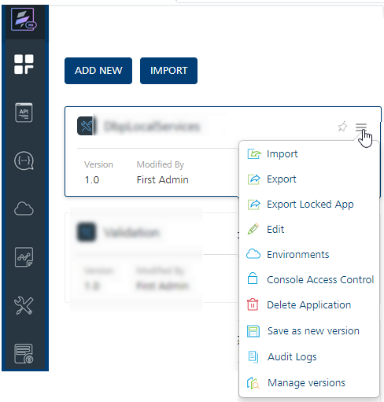
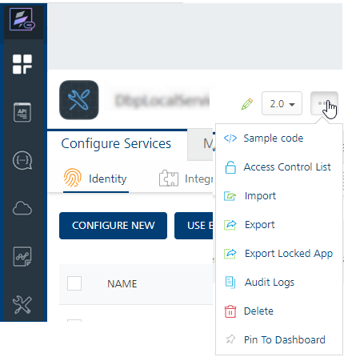

Managing Linked Apps in a Composite Foundry App
VoltMX Foundry supports Manage Linked Apps (app modularity) feature that allows linking one ore more Foundry apps into another Foundry apps - composite apps. The services of the linked apps will be accessible to the client applications mapped to the composite app.
The Locking of an app helps to improve the Foundry app development aspects as follows:
Use case: When partners build vertical-based solutions like Infinity, currently the Client and Foundry applications are shared with customers. Customers make changes to the application to meet their business requirements. When Infinity releases a new version, customers are expected to upgrade the entire new version, which is time-consuming and is error-prone.
By using the Managing Linked Apps functionality, you can clearly demarcate the base functionality of Infinity project into smaller components and by linking of them into to a Foundry app. Then, based on the customer’s requirement, the required modules can be combined together to form a functional app.
The modularity angle of Infinity projects requires us to think of breaking up a VoltMX project into multiple smaller components, each around a particular feature. Then, based on the customer’s requirement, the required modules can be combined together to form a functional app.
The customer would also be able to then upgrade only a certain modules, if they wish to do so
The app modularity of Foundry apps involves the following three aspects in it.
- Dividing a Foundry app into smaller apps.
- These are called Micro apps (modules/child apps).
- A Micro App - An application fulfilling a single module of a feature. A micro app should be able to work as an independent app, for example, a Iris application can link to the micro app.
- Each micro app is capable of serving a specified business domain or functionality.
-
Linking the child Foundry apps to another Foundry app (composite/parent app).
- Composite App - A collection of micro apps, where each app is allowed to be accessed using the composite apps app key, secret.
- Functionally, a composite app is a regular Foundry app, with the additional information about a list of other Foundry apps that are linked to it.
- Composite apps allow multiple micro apps to be added and removed from them.
-
Currently only 1 level of app linkage. This implies that micro apps can be linked into composite apps, but a composite app (containing a linked micro app) cannot be linked into another composite app.
The apps linked to a Foundry app can be controlled from a new Manage Linked Apps page that lists the apps presently linked to the app, and also allows you to link in more apps, or unlink existing apps.
-
Publish Composite apps: During Composite app publish, you can publish only the composite app or composite app + all dependent micro apps separately,
4 Service doc of Composite app shall reflect the services of composite app + dependent micro apps - i.e. services of micro apps can now be invoked via App key/ secret of composite app
The Locking of an app helps to improve the Foundry app development aspects as follows:
Extensibility:
-----
- Micro apps, composite apps are all foundry apps, with certain conditions.
The following sections detail you with more information on Lock App functionality:
- Linking and Unlinking Child Apps to a Composite Foundry App
- Publishing Foundry Composite Apps
- Direct Publishing Foundry Composite Apps
- Publishing Parent App and the Linked Child Apps Independently a Composite Foundry App
- Publishing Only Parent App of a Composite Foundry App
Linking and Unlinking Child Apps to a Composite Foundry App
Only a user with an Owner role can lock Foundry apps. When a Foundry app is locked, the base app configurations are set to read-only, including some that are replaceable.
To lock an app, follow these steps:
- Log in to the Foundry Console with user credentials that have an Owner role.
-
In the Apps page, hover your cursor over the App menu button of the app and then click Manage Linked Apps.

You can access the Export Locked App option within the app when the app is selected.
 -
In the Manage Linked Apps page that appears, click Add button.

-
Click Add. The Existing Apps dialog appears with the list of existing apps.

- Select the check box for required app/s and the version.
- Click LINK.
- In the Linked Apps dialog that appears with the apps linked status, click CLOSE.
All the linked apps are displayed in the Manage Linked Apps page. The following sections detail how to publish a composite app and linked child apps.
To unlink the linked apps, select the check box for the app in the Manage Linked Apps page and click the Unlink.
Publishing a Foundry Composite Apps
Direct Publishing Foundry Composite Apps
The composite app and the linked apps are not published. In this case, you may want to publish the parent app as well as linked apps for the first time.
- Navigate to your composite app in Foundry Console.
- Click Publish tab.
- Select an environment.
- Click PUBLISH.
The follow table details a sample parent and the linked apps, and the result of the direct publish:
Sample Parent/Composite Foundry App has child apps with versions | Direct App Publishing | Result of direct publish |
CompositeApp V1.0
|
|
Publishing Parent App and the Linked Child Apps Independently of a Composite Foundry App
The composite has modifications to the parent app as well as child apps. In this case, you may want to publish parent app changes and already published linked apps.
- Navigate to your composite app in Foundry Console.
- Click Publish tab.
- Select an environment.
- Click PUBLISH.
- In the App Configuration > Publish Method select Full or Incremental.
-
Select the Publish Linked Apps check box to include linked child apps for publishing, based on the each linked app Publish Method configuration.
For example, the Publish Method is set to Incremental in the linked child app (micro1). So when the Publish Linked Apps check box is selected, the micro1 app is published for delta publish.

-
Click SAVE & PUBLISH.
The follow table details a sample parent and the linked apps, and the result of the publish with linked apps:
Sample Composite Foundry App has modified child apps with versions and newly added child apps. | Publish with Linked Apps | Result of publish with linked apps |
CompositeApp V1.0
|
|
|
Publishing Only Parent App of a Composite Foundry App
The composite has modifications to the parent app as well as child apps. In this case, you may want to publish parent app changes and not already published linked apps.
- Navigate to your composite app in Foundry Console.
- Click Publish tab.
- Select an environment.
- Click CONFIGURE & PUBLISH.
- In the App Configuration > Publish Method select Full or Incremental.
-
Clear the Publish Linked Apps check box.

-
Click SAVE & PUBLISH.
-
Publish & Reconfigure > Publish Method
- Publish Linked Apps option is not selected to exclude micro apps publish method options for publishing.
The follow table details a sample parent and the linked apps, and the result of the publish without linked apps:
Sample Composite Foundry App has modified child apps with versions and newly added child apps. | Publish without linked apps | Result of publish without linked apps |
CompositeApp V1.0
|
|
|